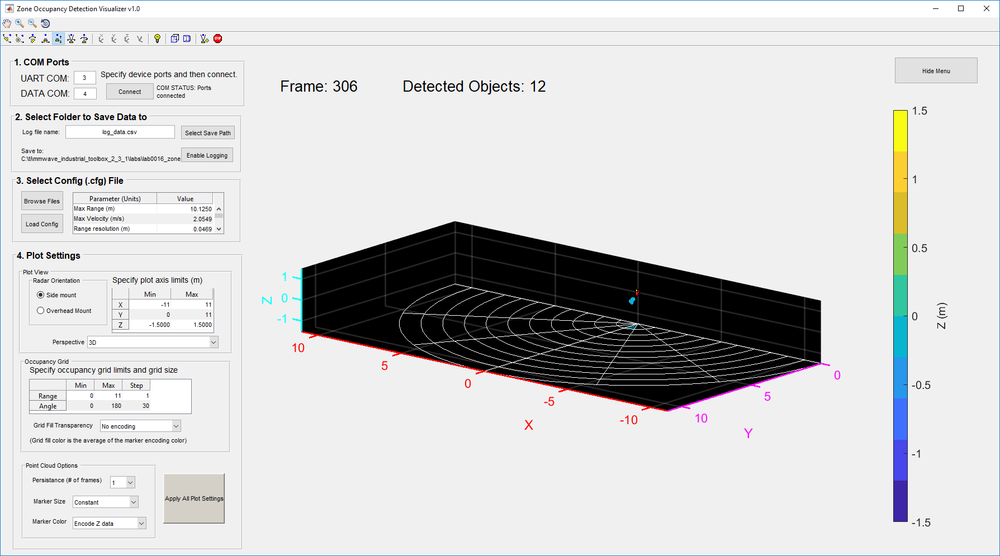
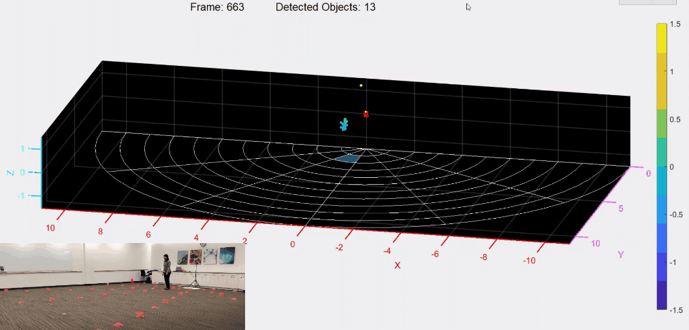
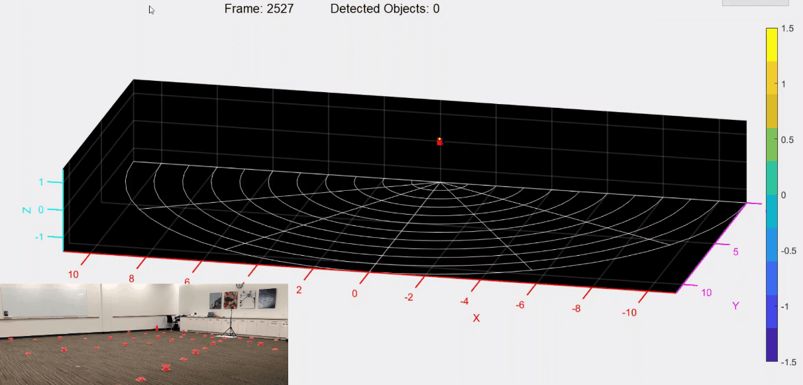

Introduction
The objective of this experiment is to use a TI mmWave Sensor EVM for zone occupancy detection. Zone occupancy detection can enable applications in which specific areas need to be monitored for the entry people or objects. This experiment was performed indoors, in a conference room to characterize the detection capabilities of the system as a human walked.
Setup
The setup for this experiment can be divided into two parts, namely physical setup and software setup. These are detailed below:
Physical Setup
The physical setup includes information about the scene such as the distance between the target and the sensor antenna, the type of target used, hardware setup and any other physical considerations e.g. non-reflective surfaces or use of anechoic chamber etc. The physical setup used for this experiment is given below:
- This experiment was performed in a conference room
- An IWR1443 EVM was mounted to a tripod at a height of 1.5m above the ground. The EVM was oriented vertically with the antenna facing straight ahead to survey the area of interest.
- Marker cones were placed on the ground to define a reference grid. The grid was defined by range and angle from 0m to 11m and 0degrees to 180 degrees (where possible and not limited by room dimensions). Each grid had a height of 1m and spanned a 30 degree angle.

- The areas of zone detection were characterized for a person:
- Walking in an arc from 0 to 180 degrees at a constant range
- Walking radially at a constant angle
- Data was collected using the IWR1443 EVM and the visualizer provided in the Zone Occupancy Detection lab
- As the person walked, the object detection data was logged to a CSV file for viewing offline and the visualizer screen was captured.
Software setup
- The IWR1443 EVM was running the mmWave SDK Out-of-Box Demo.
- The IWR1443 EVM was connected to a Windows laptop running the visualizer provided in the Zone Occupancy Detection lab
- The custom configuration utilized had static clutter removal enabled to remove clutter and only detect objects moving into a zone: mmw_zone_occ_demo_14xx.cfg
Method
The steps presented below were repeated for each test case
- Create the physical setup as per the details provided above.
- Flash the mmWave SDK Out-of-Box Demo on the mmWave EVM and connect the EVM to the host PC.
- Launch the visualizer provided in the Zone Occupancy Detection lab on the host PC. Using the visualizer the following options were configured:
- COM Ports: connect to device's ports
- Data logging: enabled
- Configuration: above file loaded
Plot settings: default used

- Test Cases:
- Walk in an arc for range grid of 1-2m, 3-4m, and 5-6m from the EVM over the angle 0 to 180degrees. Due to room dimension limitations, distances greater than 5m could not be tested from 0-60degrees.
- Walk radially from 0-10m for each 30 degree angle grid.
- Without moving the target, use a measuring tape to measure the vertical distance between the target and the mmWave EVM.
Results
The steps presented above were repeated for each test case as explained above. The results are summarized in the following tables.
| Legend | |
|---|---|
| ✔ | Detection |
| ✖ | No detection |
Human walking in an arc at a constant radial range:
| 0-30 degrees | 30-60 degrees | 60-90 degrees | 90-120 degrees | 120-150 degrees | 150-180 degrees | ||
|---|---|---|---|---|---|---|---|
| 1-2m | ✔ | ✔ | ✔ | ✔ | ✔ | ✔ |
|
| 3-4m | ✖ | ✔ | ✔ | ✔ | ✔ | ✔ |
|
| 5-6m | ✖ | ✔ | ✔ | ✔ | ✔ | ✖ |
|


Human walking radially at a constant angle:
| Degrees | 1-2m | 2-3m | 3-4m | 4-5m | 5-6m | 6-7m | 7-8m | 8-9m | 9-10m | 10-11m | |
|---|---|---|---|---|---|---|---|---|---|---|---|
| 0-30 | ✔ | ✔ | ✔ | ✖ | ✖ | Not testable (wall) | Not testable (wall) | Not testable (wall) | Not testable (wall) | Not testable (wall) | No video |
| 30-60 | ✔ | ✔ | ✔ | ✔ | ✔ | ✔ | ✔ | ✔ | Not testable (wall) | Not testable (wall) |
|
| 60-90 | ✔ | ✔ | ✔ | ✔ | ✔ | ✔ | ✔ | ✔ | ✔ | ✔ |  |
| 90-120 | ✔ | ✔ | ✔ | ✔ | ✔ | ✔ | ✔ | ✔ | ✔ | ✖ |  |
| 120-150 | ✔ | ✔ | ✔ | ✔ | ✔ | ✔ | ✔ | ✔ | ✖ | Not testable (wall) | No video |
| 150-180 | ✔ | ✔ | ✔ | ✔ | ✖ | ✖ | Not testable (wall) | Not testable (wall) | Not testable (wall) | Not testable (wall) | No video |

Conclusion
The IWR1443 mmWave SDK Out-of-Box Demo was successfully able to be used for zone occupancy detection applications.
A person walking could be detected in zones ranging from 1 to 10m. At a range of 6m or less the detectable angles were +/-60 degrees.